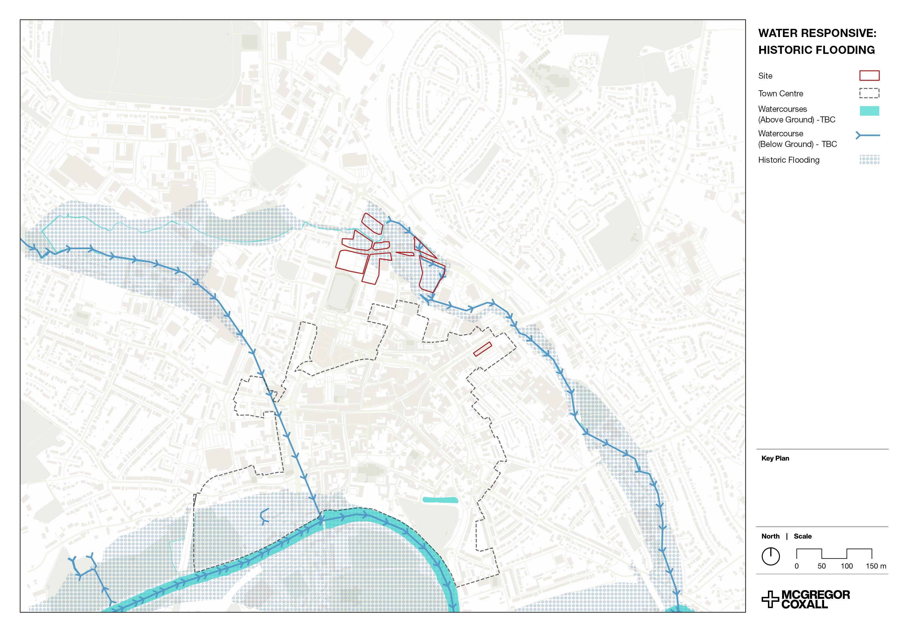

BUILDING NEAR FLOOD ZONES
This project investigated how to develop land close to the town centre which was prone to flooding.
PROJECT DETAILS
This local council wanted to investigate the viability of developing on land which sat in or near areas designated as Flood Zones 2 or 3 by the Environment Agency, particularly concerning the possibility of residential developments. This required analysis pertaining to drainage in the local area, visibility of the development from the surrounding area (and vice versa), and a suitability analysis for the placement of residences in the analysis site.
IMAGE GALLERY
This map highlights the area's relationship with flooding caused by surface water. Further analysis, such as the drainage analysis, helped to support this data.

This map shows areas which historically have flooded in the area alongside the nearby watercourses, both above and below ground.
A viewshed analysis was conducted to investigate how visible certain landmarks of the surrounding area would be from the site, and how the site could be seen from listed buildings (used as a proxy for cultural landmarks and sites of interest in the surrounding area). To maximise insights gained from this, the visibility analysis comprised of three main factors: sightlines; visibility; and a raster layer highlighting the most visible features. This analysis highlighted that most of the sites were relatively visually inconspicuous, with the exception of a few, notably the south-eastern site and some central sites.
A key part of this project was investigating the site's relationship with water and drainage. By sitting in a flood zone, it was clear that much of the site would be susceptible to fluvial flooding, but it was important to investigate how long this water may reside in these areas when a flood event occurs. I used the SAGA channel network & drainage basins tool in QGIS to identify drainage channels and strahler orders (the number of combined drainage channels) from a digital terrain model, which allowed me to visualise where water drained to. These sites had few drainage options, as shown by the low concentration of lines within the sites. I then overlayed this with the EU's Imperviousness Density (IMD) dataset which highlights permeability of the terrain. This showed that the sites generally had less permeable terrain, such as concrete or tarmac, contributing to flood duration and intensity.